Selecting peptides and fragments to monitor by targeted triple quadrupole (SRM) assays can be challenging, proving time and cost intensive. Previous work from the MacCoss lab has shown data independent acquisition (DIA) data to be a better predictor of peptide performance in targeted triple quadrupole assays. DIA methods sample the proteome in a more comprehensive manner, and the type of information we can obtain from these experiments – fragment ion intensity, retention time, and run-to-run reproducibility – is helpful for target selection.
In this tutorial you will work through a workflow developed to assess and select suitable peptides for SRM analysis based on DIA results. Specifically, you will cover the following concepts:
Note: the steps for searching gas-phase fractionated samples with EncyclopeDIA are documented in the Pino et al., 2020 MCP paper. The three gas-phase fractionated samples are searched and saved as separate chromatogram libraries, then combined into a single library using the “Combine multiple libraries” function found in EncyclopeDIA 2.13.30 and later.
To start this tutorial, download the following ZIP files:
https://skyline.ms/webinars/Webinar22.zip
https://skyline.ms/webinars/Webinar22_dia_libA.zip
https://skyline.ms/webinars/Webinar22_dia_libB.zip
https://skyline.ms/webinars/Webinar22_dia_libC.zip
Note that the DIA library files are very large (about 3 GB each), because they contain the gas-phase fractionated DIA runs used to build the chromatogram library. Extract the files to a folder on your computer, like:
C:\Users\brendanx\Documents
This will create a new folder:
C:\Users\brendanx\Documents\Webinar22
If you have been using Skyline prior to starting this tutorial, it is a good idea to revert Skyline to its default settings. To do so:
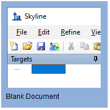
The settings in your current instance of Skyline have now been reset to the default.
Since this tutorial covers a proteomics topic, ensure that the user interface is set to the “Proteomics interface”. Click the user interface button in the upper right-hand corner of the Skyline toolbar and select Proteomics interface which looks like this:
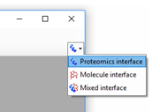
Skyline is operating in proteomics mode, which is displayed by the protein icon in the upper right-hand corner of Skyline.
The goal of this section is to import the GPF DIA search and peak boundary data. You will give Skyline the results and background for the experiment, including parameters for what peptides and transitions to extract. This could additionally be adjusted to suit other DIA search outputs that provide information about peptide retention time and scoring.
Return to the Start Page using File > Start Page and click Import DIA Peptide Search.
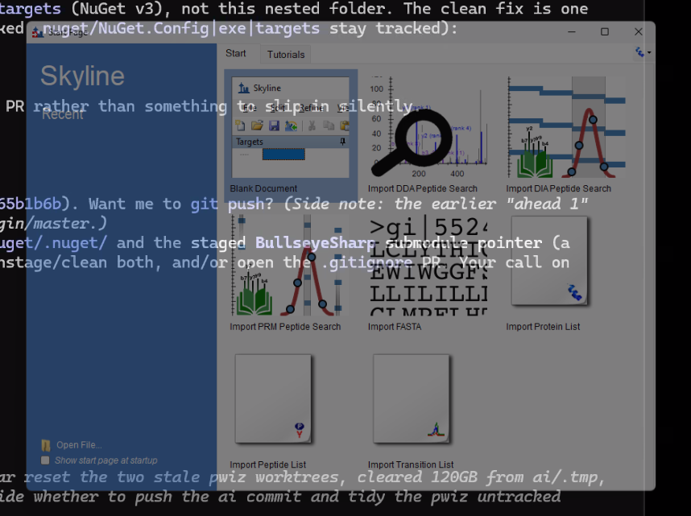
You will be prompted to save the file prior to import. Save to DIA_to_SRM_Tutorial.sky.
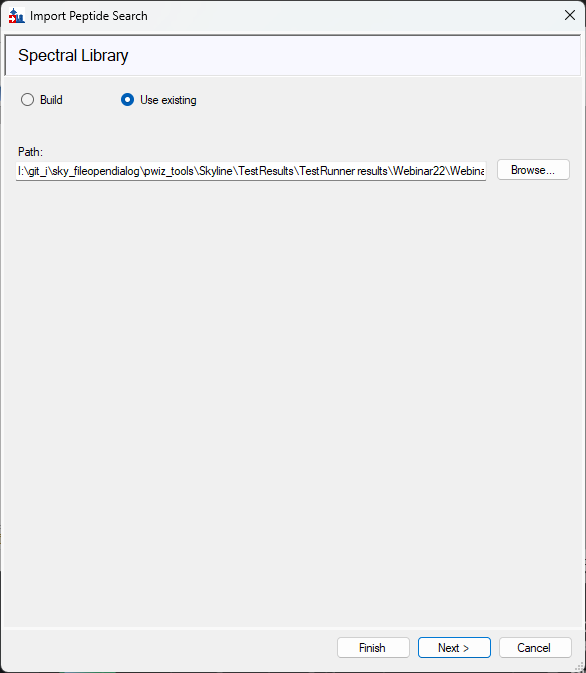
Click Next.
Since there are multiple injections per replicate from the gas-phase fractionation, you will skip adding the results files at this time. Click Next to continue. A pop-up window will ask if you are sure you want to continue; click Yes.
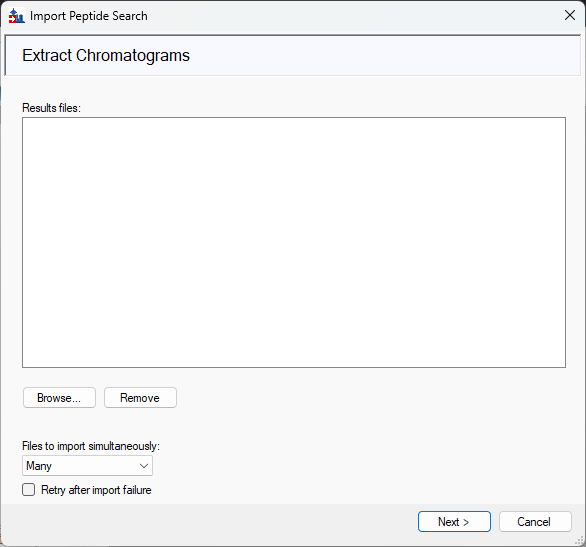
For this tutorial no modifications were included in the peptide search step, so just click Next to continue.
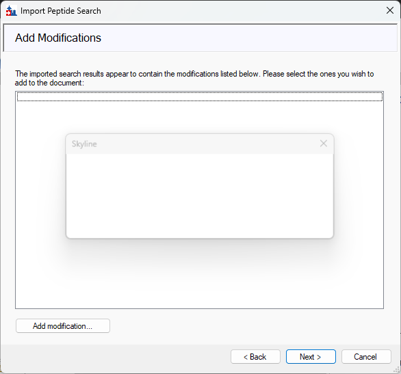
For this dataset you will extract the product ions using the following options:
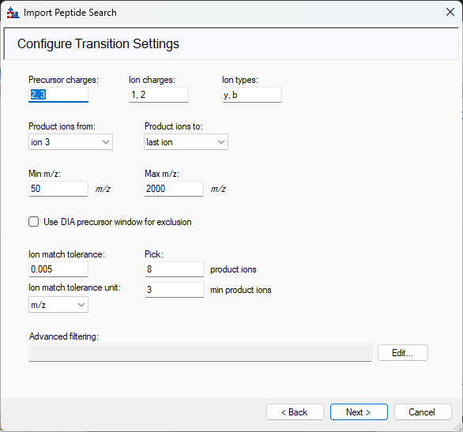
Click Next.
Some of these options may be slightly different than what you would use for a regular DIA analysis; for example, limiting to the 3rd ion – this is a common heuristic used in targeted triple quadrupole assays, the end goal here.
You will just be extracting the MS/MS from the results. Select the following options:
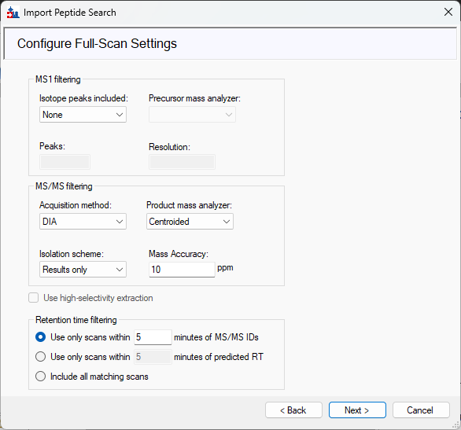
Click Next.
For this dataset select enzyme Trypsin [KR | P] and set Max missed cleavages to 0. Click Browse and navigate to the uniprot_human_25apr2019.fasta file.
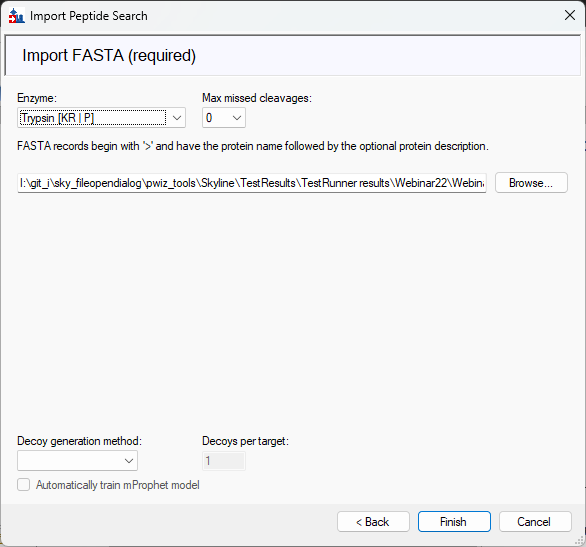
Click Finish. A pop-up will show the progress of the FASTA processing.
A new pop-up will appear for associating proteins. Use the following options:
You will notice that the numbers in the Protein association results table at the bottom will change with the selection of different options for how to treat proteins and peptides. “Mapped” = have peptides detected in the library, “Unmapped” = in the FASTA but no peptides mapping to them, “Targets” = after protein grouping and passing the above criteria, “Shared peptides” = in more than one protein entry in the FASTA.
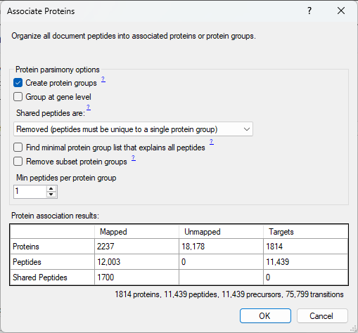
Click OK.
The Targets view of your Skyline document should now be populated with the proteins, peptides, precursors, and fragments detected in your library, in this case from EncyclopeDIA results. Some targets are additionally filtered out based on the selected parameters – e.g. 0 missed cleavages.
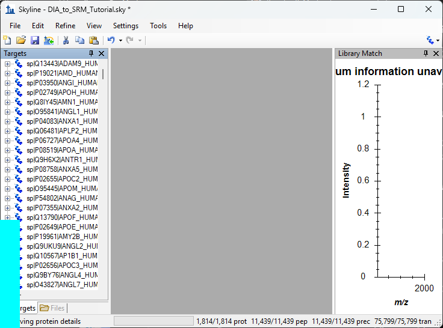
For scheduling the SRM assays you will need an indexed retention time standard, such as PRTC. PRTC was included in the samples in this DIA experiment, so now you need to add them to the document since they were not included in the peptide search/library. Do this prior to importing results and extracting chromatograms to ensure they are extracted. There are a couple of ways to do this, but to save time you can copy and paste them from an existing document. If they are added based on sequence or a FASTA, it requires manual annotation for the heavy labeled residues.
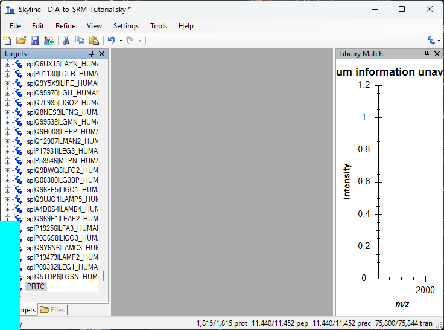
Save the document.
Now that the environment is all set up, you are ready to import and extract the chromatograms for all of the peptides populated from the library. Since the gas-phase fractionation uses 6 separate injections, you will import the results as multi-injection replicates.
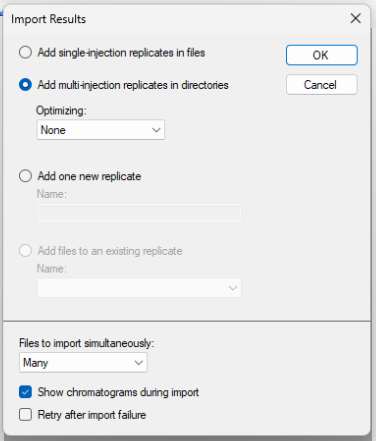
Import may take a couple of minutes. Save the document.
You now have all the DIA results matching your document settings. Next, you will go through those results to filter for just reproducible peptides.
The power of this method is that you can be confident the peptides for these target proteins will be measured in your own samples because you have already observed them in your own DIA experiment. Additionally, you can inform your selection of peptides based on the prior knowledge gained through the DIA measurements. Specifically, you have fragment ion intensity and reproducibility information – as measured by percent coefficient of variation (%CV) calculated for 3 replicate injections. This information helps you select peptides for each protein that will most likely have good performance in an SRM assay.
For the peptide refinement you will start with some global refinements. This leaves a list of peptides that serve as a set of known reproducible peptides that you can revisit for many different proteins as needed in the future. This filtering could also be done for specific proteins, as demonstrated in Step 3. Filter first by peptide %CV, then by peptide intensity rank (the filtering can be done in the opposite order as well). The %CV filter removes bad detections and catches poor chromatography or reproducibility; the peptide intensity filter then picks the best of the best for each protein, and fragment intensity rank for each peptide. The filtering parameters can be relaxed, or specific peptides of biological interest can be kept/added back. An important caveat is that this method can only be used for proteins detected in the DIA experiment.
Skyline automatically calculates the %CV for every peptide if there are replicates. This information can be found in optional columns in the Document Grid. First, get a feel for the general %CV distribution in this document.
Navigate to View > Peak Areas > CV Histogram.
The default view will have the red dashed line at 20% CV. You can adjust it to show 30% by clicking Properties and adjusting the CV cutoff to 30.

As a general cutoff, impose the following rules for the peptides you would want to include in your database of possible peptides suitable for targeted assays: there must be 2 peptides per protein, and peptides must be below 30% CV across the three replicates.
Navigate to Refine > Advanced. A new pop-up window will appear with multiple refinement options. In the Document tab select the following option:

In the Consistency tab select the following options:

Click OK. Use File > Save As to save the filtered document, e.g. DIA_to_SRM_Tutorial-filtered.sky.
You have now filtered out the peptides and proteins that are less reproducible. Specifically, you can see in the bottom right-hand corner of the Skyline document that there are 967 proteins that have 2+ peptides with at least 3 transitions and a %CV < 30% (7,122 peptides).
For this example, suppose you are interested in a subset of 67 proteins in CSF that have previously been described as differentially abundant in a study of interest. Now you can focus just on selecting peptides from those proteins.
For this step you will only keep proteins in the document if they are present in your list.

Click OK. A new pop-up will appear listing the proteins in the list that are not in the document. Click OK to continue.

You now have a document that only contains peptides matching the proteins from your list. Additionally, these are only peptides with good reproducibility as enforced by the %CV filtering. Depending on the number of target proteins or the aim of the project, additional filtering for peptides and transitions can be done at this point. In this case you will simply limit the peptide targets to two per protein, and limit the transitions to 5 per peptide. This cuts out some manual assessment for the sake of the tutorial, but additional manual assessment and literature searching is highly encouraged for a smaller assay.
Navigate to Refine > Advanced. In the Results tab set the following options:
In other cases you might want to make other choices like Max precursor peak only or Remove nodes missing results, but here they will not change the document.

Click OK. Navigate to Edit > Expand All > Proteins.

Save the file as SRM_targets.sky.
You should now have a document with 60 proteins with 2 peptides, and 13 PRTC peptides. You will use this as your list for the SRM assay. The reason to keep 5 transitions for each peptide is to ensure there is some room to adjust the list after an initial round of SRM assay testing.
There are two strategies to make use of the retention time measured in the DIA experiments. One easy way is to use it as a library to confirm peaks are correctly picked in an unscheduled SRM assay. Another way is to directly schedule an SRM run using an iRT standard included in the DIA runs. This requires a couple of runs of just the iRT sample on the HPLC and instrument you wish to run your SRM assay on. In this case it is an Easy nLC and a Thermo Altis triple quadrupole. For more information about iRT, follow the “iRT Retention Time Prediction” tutorial or webinar #7 of the same name on the Skyline website. In this example you will build a calculator from the DIA results, then use it for scheduling with a shorter gradient SRM method.
Navigate to View > Retention Times > Regression > Score To Run.


Give your iRT calculator a name (e.g. CSF_targets) and then click Create. In the pop-up window, Create iRT Database, give the iRT calculator file a name. Save the calculator to this tutorial folder and name it the same as before: CSF_targets. Click Save when you are done.
In the Edit iRT Calculator window, from iRT standards, select Pierce (iRT-C18) from the dropdown:

You have just set your iRT values. Recall that iRT values are unitless; they relate to the order of elution, and here range from -27.60 to 100.

In the Peptide Settings – Prediction tab, the Retention time predictor option CSF_targets should be selected. Click the dropdown and select <Edit current>. Adjust Time window to 5 min, and click OK. Click OK again.
If an Add Standard Peptides window appears, click No. (This appears to be a bug that will be fixed in the future.)
Right-click on the regression plot, select Calculator > CSF_targets. Your regression should now be updated.

Note that one peptide, GSGVGEQDGGLIGAEEK, could not be calibrated because its m/z 801.9 falls into a gas-phase fraction 800–900 with no iRT peptides in it. (This is also a bug that will be fixed in the future.) For now, right-click on the graph and choose Remove Outliers. If you look at the chromatograms, you can see a light yellow section on either side of the now-predicted retention time for each peptide.
For this step you acquire and import unscheduled, iRT-standards-only data files on your new gradient, HPLC, and column set up.

Go to Settings > Transition Settings. In the Prediction tab use the following settings:
In the Full-Scan tab use the following settings:

Click OK.

Once the files are imported, the regression graph should adjust to the new data. Only the iRT standards have been measured, but now Skyline can predict the retention time for all of the other peptides based on their stored iRT scores, which you can see indicated by the purple points on the x-axis of the graph.
Navigate to View > Retention Times > Scheduling.

You always want to choose an appropriate number of concurrent transitions for your instrument and your chromatography. The goal is to balance the points-across-the-peak considering the peak width and your instrument's dwell time. You can examine the effect of window width on the number of concurrent transitions in Skyline.

Go to File > Export > Transition List.

Once you have selected your number of concurrent transitions, click OK. In the Scheduling dialog box that pops up, select Use retention time average, and click OK. Name your transition list and click Save. Note: if there are multiple methods being written, then Skyline will automatically append numbers to the end of the file name, starting with 0001.
Use File > Open Containing Folder to navigate to where you just saved the transition lists.

There are multiple transition lists – one for each sample injection. Notice that even though there are multiple methods, each method contains the iRT standard fragments. Your new transition lists are now ready for use in creating a new instrument method in Xcalibur.
Congratulations! You have a scheduled transition list for a new assay.